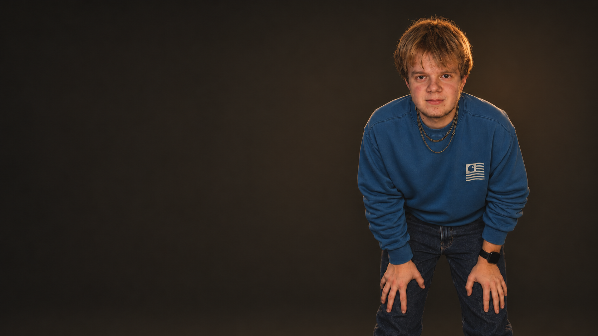

Sirius Petersen
Skuespiller og videoskaber
Sirius Petersen er en dansk skuespiller og videoskaber fra Grenå. Han arbejder hovedsageligt med egne videoer på YouTube-kanalen Sirius Petersen, hvor hans interesse for film, visuelle effekter og anderledes projekter kommer til udtryk.
Petersen begyndte at lave YouTube som otteårig. De tidlige videoer omfattede udfordringer med hans bedstefar, små gyserfilm optaget på en iPad og sketches med to veninder. Interessen for filmproduktion blev senere styrket gennem en Niki Topgaard – Movie Locations-video, som hans far hjalp ham med at lave. Med tiden har han lagt større vægt på optagelsernes kvalitet, redigering og visuelle effekter.
I 2018 begyndte han at gå til castings, blandt andet til Klassen på DR og Sunday. Hans tidlige arbejde foran kameraet bestod hovedsageligt af statistroller, mens hans egen YouTube-kanal gav mulighed for at udvikle og medvirke i egne produktioner. Han har desuden haft værtsopgaver på TV Djurs og været i erhvervspraktik hos DR i 10. klasse.
Som tolvårig startede Petersen et automatfirma, der udlejede automater gennem automaten.dk. Han havde selv lavet hjemmesiden, som ikke længere er tilgængelig. Ved siden af videoarbejdet interesserer han sig for musik og andre selvstændige projekter. Hans fremtidsplaner omfatter samarbejder med filmselskaber og større film- og tv-produktioner.